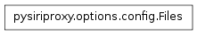
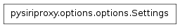
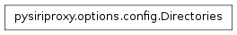
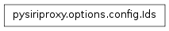
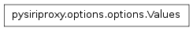
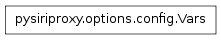
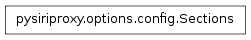
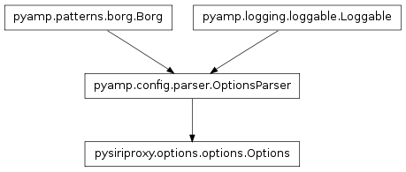

The options module contains the Options class which provides the ability to load settings from the pysiriproxy configuration file, as as being able to parse the command line arguments.

The Files class contains definitions of various file paths that pertain to pysiriproxy configuration.
The CertFile property contains the path to the certification file for pysiriproxy.
The ConfigFile property contains the path to the configuration file for pysiriproxy.
The EtcHosts property contains the path to the system hosts file.
The GenCerts property contains the path to the bash script that generates certificates for pysiriproxy.
The KeyFile property contains the path to the key file to use for pysiriproxy.
The LogFile property contains the path to the log file to use for pysiriproxy.

The Settings class defines all of the specific configuration settings that can be used in the pysiriproxy configuration file.
This setting should contain the path to the file that is used as the certification file for connecting to the Apple’s server.
This setting should contain the debug level which will be used by the system.
This setting should contain a string that will be spoken by Siri in the event of an Exception while objects are being filtered or speech rules are being applied.
This setting should contain be set to True in order to configure the server such that it exits every time an established connection to the iPhone is lost. This will allow an external script to restart the server cleanly each time the connection is lost.
This setting should contain a boolean indicating whether the pysiriproxy SSL certificates should be generated or not.
The setting should contain the path to the file that is used as the key file for connecting to the Apple’s server.
This setting should contain the path to the log file where pysiriproxy should log all of its logging messages.
This setting should contain the log level which will used by the system.
Here are valid values for this setting:
- DEBUG,
- INFO,
- WARN, and
- ERROR
This setting should contain the path to the system directory that contains the plugins which pysiriproxy should load.
This setting should contain the host name of the Apple’s server. Defaults to the iOS 5 server.
This setting should contain the port number used for connecting to Apple’s web server.
This setting should contain a string which is the format for the timestamp which will be applied to all logged messages. See the man page for the date command for more info on the format. If this is an empty string, no timestamp will be applied to logged messages.
This setting should contain the port number that the iPhone uses for its connection.

The Directories class contains various properties which define directories that contain pysiriproxy data.
The Config directory contains the user’s siri proxy configuration directory.
The Etc property contains the path to the system etc directory.
The Home property contains the user’s home directory.
The Scripts property contains the scripts directory within the user’s siri proxy configuration directory.
The SiriInstall property contains the system installation directory for pysiriproxy.
The SystemDefaultConfig property contains the path to the system directory which contains the default configuration files created when pysiriproxy is installed on the system.

The Ids class defines various configuration settings.
Note
ConfigParser converts all properties to lower case
The name of the configuration property that stores the certification file.
The name of the configuration property that stores the debug level for the system.
The name of the configuration property that stores the string which Siri will respond with in the event that an Exception is encountered while processing an object filter, or a speech rule.
The name of the configuration property that determines whether the server application will exit in the event that the connection to the iPhone is lost. This will allow an external script to restart the server cleanly each time the connection is lost.
The name of the command line property that determines if the SSL certificates should be generated.
The name of the configuration property that stores a particular host name.
The name of the configuration property that stores the version of iOS that pysiriproxy should be configured for.
The name of the configuration property that stores the path to the key file to use for the system.
The name of the configuration property that stores the path to the log file to use for the system.
The name of the configuration property that stores the log level to use for the system.
The name of the configuration property that stores the path to the directory containing the plugin scripts.
The name of the configuration property that stores the port number to use.
The name of the configuration property that stores the boolean indicating whether logged messages should be timestamped or not.

The Values class contains definitions of values that are used for certain command line arguments, or configuration properties.
Configure for iOS version 5.
The server for iOS 5.
Configure for iOS version 6.
The server for iOS 6.

Define various variables that can be used within the configuration file.
Note
Variables should be all caps
The name of the variable which stores the path to the configuration file.
The name of the variable which stores the path to the user’s home directory.

The Sections class defines the names of the sections that can be used within the configuration file.
The section containing debugging configuration settings.
The section containing general configuration settings.
The section containing settings pertaining to logging the system.
The section containing settings pertaining to creating responses.
The section containing settings pertaining to Apple’s web server.
The section containing settings pertaining to the iPhone connection.

The Options class is responsible for parsing command line and configuration file options and providing the ability to get the value of a given option.
Define the list of all of the options which are configurable only via the command line.
Define the dictionary of possible configuration section names mapped to the list of configuration options available for that section.
Define the dictionary of variables that can be used in the pysiriproxy configuration file.
These variables can be used by adding a dollar sign before the variable name in the configuration file. These variables will be replaced in the configuration file prior to parsing it.
Example:
# If the following setting is configured in the configuration file,
# the $HOME variable would be replaced by the user's home directory
# prior to parsing the configuration file
RandomSetting = $HOME/Documents